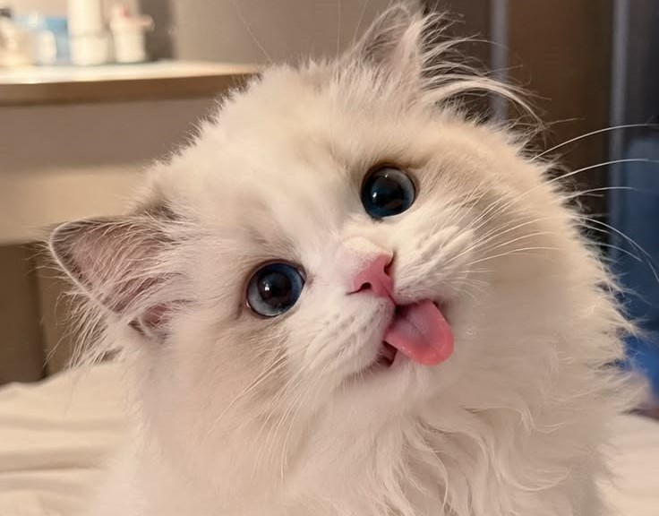
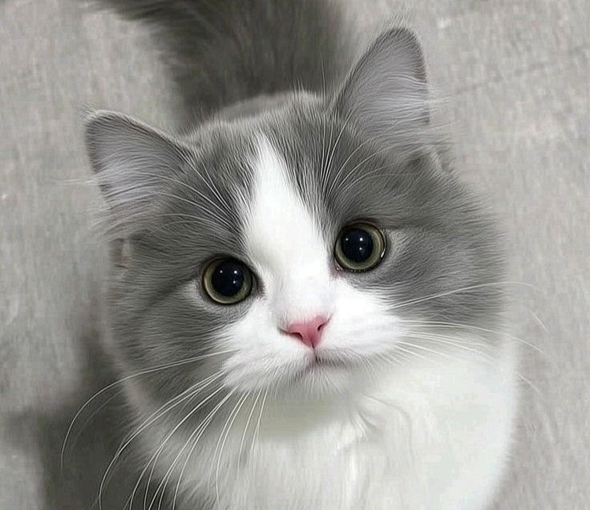
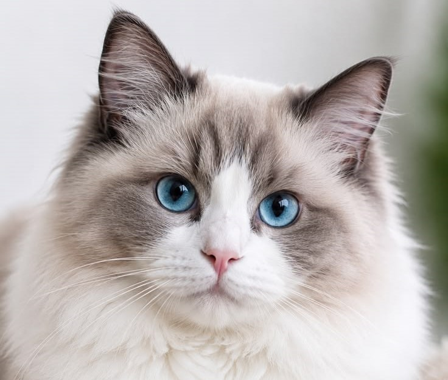

Мило
Спокойный мечтатель, который обожает мягкие пледы и солнечные подоконники.
Любит поспатьМесто, где мурчат
Знакомьтесь с пушистыми героями нашего маленького сайта. У каждого свой характер и своя история!
Познакомиться
Наши любимцы
Три пушистых настроения на любой день.
Спокойный мечтатель, который обожает мягкие пледы и солнечные подоконники.
Любит поспать
Любопытная исследовательница. Проверит каждый пакет и каждую коробку.
Любит играть
Дружелюбный мурлыка, который встречает каждого так, будто вы старые друзья.
Любит вниманиеОни напоминают нам делать паузы, замечать уютные мелочи и делиться теплом. Этот небольшой сайт создан как демонстрационный проект для тестирования загрузки файлов и изображений в облачную СУБД.
Спасибо, что заглянули в наш Котодом.
Написать нам